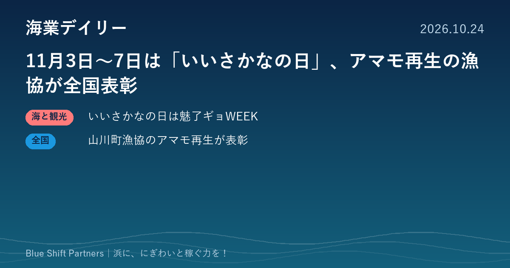

2026.10.24
11月3日〜7日は「いいさかなの日」、アマモ再生の漁協が全国表彰

本日は、水産庁が発表した今年の「いいさかなの日」の取り組みと、鹿児島県指宿市の山川町漁協によるアマモ場再生の取り組みがサステナブルシーフードの表彰で国内部門のチャンピオンに選ばれた話題の2件を取り上げます。魚の消費を広げる動きと、浜の海を守りながら価値につなげる動きです。
水産庁、11月3日〜7日の「いいさかなの日」を「魅了ギョWEEK」に 低・未利用魚の発信を強化
水産庁は10月23日、11月3日（火）〜7日（土）の「いいさかなの日」を今年は「魅了ギョWEEK」と位置づけ、低・未利用魚（魅了ギョ）の魅力発信と利用拡大に取り組むと発表しました。10月26日〜30日には農林水産省北別館1階の「消費者の部屋」でクロダイを使った商品の試食などの展示を行い、11月27日には賛同メンバー向けの「魅了ギョ・交流会（アイゴ編）」を開きます。「さかなの日」の賛同メンバーは9月末時点で1,172となり、20の賛同メンバーが地場水産物や魅了ギョを使った新商品の発表や販売イベントを行う予定です。
ここがポイント：値がつきにくい魚を「魅了ギョ」として売り出す国の発信に乗れる機会です。浜の加工品や飲食メニューを持つ漁協・事業者は、賛同メンバーとして登録し、この期間に合わせて販売企画を打ち出すことも検討できます。
出典：水産庁「11月3日から7日は「いいさかなの日」」（2026-10-23）
指宿市・山川町漁協のアマモ場再生「山川の海のゆりかご」、サステナブルシーフード・アワード国内部門チャンピオンに
第7回ジャパン・サステナブルシーフード・アワードで、山川町漁業協同組合（鹿児島県指宿市）の「指宿市“山川の海のゆりかご”ブルーカーボンプロジェクト」が国内部門のチャンピオンに選ばれました。アマモの種の採取からマットの製作・設置、環境教育までを、県内の企業や学校、大学、研究機関と連携して行い、アマモマット89本（計445平方メートル）を設置して藻場を約1,500平方メートルに広げたとされています。2025年度には1.4t-CO2のJブルークレジットの認証を取得し、藻場を食害するイスズミの行動調査や、捕獲したイスズミを使った弁当の商品化にも取り組んでいます。
ここがポイント：藻場の再生を、ブルーカーボンのクレジットや食害魚の商品化、環境教育と組み合わせ、地域の企業や学校を巻き込んでいる点が特徴です。磯焼けに悩む浜にとって、環境保全を「稼ぐ力」や関係人口づくりにつなげる先行事例として参考になります。
出典：ジャパン・サステナブルシーフードアワード実行委員会「第7回ジャパン・サステナブルシーフード・アワード」（2026-10-21）
値がつきにくい魚を「魅了ギョ」として売り出すこと、海の環境を守る活動をクレジットや商品につなげること。どちらも、これまで価値になっていなかった浜の資源に光を当てる取り組みです。自分たちの浜にある「まだ売り物になっていないもの」を一度書き出してみると、次の一手が見えてくるかもしれません。